Rejection and Particle Filtering for Hamiltonian Learning
Christopher E. Granade
Centre for Engineered Quantum Systems
$
\newcommand{\ee}{\mathrm{e}}
\newcommand{\ii}{\mathrm{i}}
\newcommand{\dd}{\mathrm{d}}
\newcommand{\id}{𝟙}
\newcommand{\TT}{\mathrm{T}}
\newcommand{\defeq}{\mathrel{:=}}
\newcommand{\Tr}{\operatorname{Tr}}
\newcommand{\Var}{\operatorname{Var}}
\newcommand{\Cov}{\operatorname{Cov}}
\newcommand{\rank}{\operatorname{rank}}
\newcommand{\expect}{\mathbb{E}}
\newcommand{\sket}[1]{|#1\rangle\negthinspace\rangle}
\newcommand{\sbraket}[1]{\langle\negthinspace\langle#1\rangle\negthinspace\rangle}
\newcommand{\Gini}{\operatorname{Ginibre}}
\newcommand{\supp}{\operatorname{supp}}
\newcommand{\ket}[1]{\left|#1\right\rangle}
\newcommand{\bra}[1]{\left\langle#1\right|}
\newcommand{\braket}[1]{\left\langle#1\right\rangle}
$
joint work with
Nathan Wiebe • Christopher Ferrie • D. G. Cory
Learning Hamiltonians is critical to a range of QIP tasks:
- Calibration
- Static field / pulse power / crosstalk, etc.
- Debugging/Diagnosis
- $T_2$ estimation, other noise finding
- Verification/Validation
- Analog and digital quantum simulation
### **Example**: Ramsey Estimation ###
Suppose $H = \omega \sigma_z / 2$ for some unknown $\omega$.
Traditional approach:
- Prepare $\ket{+} \propto \ket{0} + \ket{1}$, measure “click” w/ pr.:
$
\|\bra{+} \ee^{\ii \omega t \sigma_z / 2} \ket{+}\|^2 = \cos^2(\omega t / 2)
$.
- Repeat for many “shots” to estimate click pr.
- Repeat for many times to estimate signal.
You'll get something that looks a bit like this:
 What's $\omega$? Fourier transform and look at the peak.
What's $\omega$? Fourier transform and look at the peak.
 We can do better.
# $H = H(\vec{x})$. #
Hamiltonian learning is a special case of *parameter estimation*:
given data $D$, what is $\vec{x}$?
### The Likelihood Function ###
$\|\bra{+} \ee^{\ii \omega t \sigma_z / 2} \ket{+}\|^2$
defines probability $\Pr(d | \omega; t)$ for every
outcome $d$, model $\omega$ and experiment $t$.
Basis for both maximum-likelihood and Bayesian methods.
### Bayesian Parameter Estimation ###
The likelihood tells us what we learn from data:
$$
\Pr(\vec{x} | d; e) = \frac{\Pr(d | \vec{x}; e)}{\Pr(d | e)} \Pr(\vec{x})
$$
---
Estimate $\hat{x} = \expect[\vec{x} | d; e] = \int \vec{x} \Pr(\vec{x} | d; e)\dd \vec{x}$.
- **Optimal** for mean-squared error.
Each posterior $\Pr(\vec{x} | d; e)$ encodes our uncertainty about
$x$.
$$
\expect[(\hat{x} - \vec{x})^\TT (\hat{x} - \vec{x})] = \Tr \Cov(\vec{x})
$$
---
Can use to make *adaptive* decisions:
$$
e_* = \operatorname{arg min}_e \expect_d[\Tr \Cov(\vec{x} | d; e)]
$$
### **Example**: $x = (\omega)$ ###
Can analytically find posterior for Gaussian priors,
use to adaptively choose $t_k$.

We can do better.
# $H = H(\vec{x})$. #
Hamiltonian learning is a special case of *parameter estimation*:
given data $D$, what is $\vec{x}$?
### The Likelihood Function ###
$\|\bra{+} \ee^{\ii \omega t \sigma_z / 2} \ket{+}\|^2$
defines probability $\Pr(d | \omega; t)$ for every
outcome $d$, model $\omega$ and experiment $t$.
Basis for both maximum-likelihood and Bayesian methods.
### Bayesian Parameter Estimation ###
The likelihood tells us what we learn from data:
$$
\Pr(\vec{x} | d; e) = \frac{\Pr(d | \vec{x}; e)}{\Pr(d | e)} \Pr(\vec{x})
$$
---
Estimate $\hat{x} = \expect[\vec{x} | d; e] = \int \vec{x} \Pr(\vec{x} | d; e)\dd \vec{x}$.
- **Optimal** for mean-squared error.
Each posterior $\Pr(\vec{x} | d; e)$ encodes our uncertainty about
$x$.
$$
\expect[(\hat{x} - \vec{x})^\TT (\hat{x} - \vec{x})] = \Tr \Cov(\vec{x})
$$
---
Can use to make *adaptive* decisions:
$$
e_* = \operatorname{arg min}_e \expect_d[\Tr \Cov(\vec{x} | d; e)]
$$
### **Example**: $x = (\omega)$ ###
Can analytically find posterior for Gaussian priors,
use to adaptively choose $t_k$.

**Problem**: exactly finding $\hat{x}$ is intractable
in general.
**Answer**: numerically approximate $\int f(\vec{x}) \Pr(\vec{x} | d)\dd\vec{x}$.
## Monte Carlo Integration ##
$$
\int f(\vec{x}) p(\vec{x})\dd\vec{x} \approx \frac{1}{N} \sum_i f(\vec{x}_i)
\text{ for } \left\\{\vec{x}_i\right\\} \sim p(\vec{x})
$$
---
Efficient if we can sample from $p(\vec{x})$.
How do we do that for $p(\vec{x}) = \Pr(\vec{x} | d; e)$?
## Rejection Sampling ##
Given samples from $\Pr(\vec{x})$ and likelihood
function $\Pr(d | \vec{x}; e)$, how do we sample
from posterior for datum $d$?
- $\vec{x} \sim \Pr(\vec{x})$.
- $u \sim \operatorname{Uniform}(0, 1)$.
- If $u \le \Pr(d | \vec{x}; e)$, yield sample $\vec{x}$.
Otherwise, reject $\vec{x}$.
Accepted samples are distributed according to posterior.
**Next problem**: likelihood $\to 0$ with large data
sets.
**Next answer**: *resample* instead of drawing
from initial prior.
After each datum $d$, match moments to a Gaussian, draw new samples
from that Gaussian.
- $\bar{x} \gets \expect[\vec{x} | d]$.
- $\Sigma \gets \operatorname{Cov}[\vec{x} | d] = \expect[\vec{x} \vec{x}^\TT | d] - \bar{x} \bar{x}^\TT$.
## Welford's Algorithm ##
Can compute $\bar{x}$, $\Sigma$ from
one sample at a time. Numerically stable.
- $n, \bar{x}, M_2 \gets 0$.
- **For** each sample $x$:
- $n \gets n + 1$
- $\Delta \gets x - \mu$
- $\bar{x} \gets \bar{x} + \Delta / n$
- $M_2 \gets M_2 + \Delta (x - \bar{x})$
- **Return** mean $\bar{x}$, variance $M_2 / (n - 1)$.
Vector case is similar.
## Rejection Filtering (ReJF) ##
**Input**: Prior mean $\bar{x}$, prior covariance $\Sigma$,
number of attempts $m$.
- **For** each datum $d$ and experiment $e$:
- $n, \bar{x}', M_2 \gets 0$
- **While** $n < m$:
- $\vec{x} \sim \mathcal{N}(\bar{x}, \Sigma)$.
- Accept $\vec{x}$ w/ $\Pr(d | \vec{x}; e)$.
- **If** accepted, update $n$, $\bar{x}'$, $M_2$.
- $\bar{x} \gets \bar{x}'$, $\Sigma \gets M_2 / (n - 1)$.
## Advantages of RejF ##
- Easy to implement
- Never needed to remember each accepted $x$!
- Very low-memory (constant # of
accumulator registers), ideal for FPGA use.
- Easily parallelizable
Example: Phase Estimation, $x = (\phi)$
Prepare state $\ket{\phi}$ s. t. $U\ket{\phi} = \ee^{\ii \phi}\ket{\phi}$,
measure to learn $\phi$.

If $\theta = 0$, same likelihood as Ramsey/Rabi, with $\phi = \omega$, $M = t$.
Example: Phase Estimation, $x = (\phi)$

**Drawback**: RejF requires posterior after each datum
to be $\approx$ Gaussian.
We can solve this by using a more general approach
to resampling and filtering.
## Liu-West Resampler ##
If we remember each sample $\vec{x}$, we can use them to
relax RejF assumptions.
To draw new $\vec{x}'$ from $p(\vec{x})$, let
$a^2 + h^2 = 1$, then:
- Approximate $\bar{x} \gets \expect[\vec{x}]$, $\Sigma \gets \operatorname{Cov}(\vec{x})$.
- Draw $\vec{x}$ from original approx of $p(\vec{x})$.
- Draw $\vec{\epsilon} \sim \mathcal{N}(0, h \Sigma)$.
- **Return** $\vec{x}' \gets a \vec{x} + (1 - a) \bar{x} + \vec{\epsilon}$.
---
- $a \to 0$: RejF (assumed density) approx
- $a \to 1$: Bootstrap
Resampling provides numerical stability
with less particles.
 ## Particle Filter ##
- Assign a *weight* $w_i$ to each sample $\vec{x}_i$.
- Instead of rej. sampling, update weights by
$$
w_i \mapsto w_i \times \Pr(d | \vec{x}_i; e).
$$
- Renormalize (set $\sum_i w_i = 1$).
- Periodically use Liu-West to draw new $\\{\vec{x}_i\\}$.
---
Corresponds to
$
p(\vec{x}) \approx \sum_i w_i \delta(\vec{x} - \vec{x}_i).
$
### **Example**: $x = (\omega, T_2)$ ###

#### **QInfer**: Particle Filter Implementation for Quantum Info ####
We provide an open-source implementation for use in experiment and theory alike.
Useful for Hamiltonian models...
- Rabi/Ramsey/Phase est. (todo)
- Swap spectroscopy (todo)
...as well as other QIP tasks.
- Tomography (todo)
- RB (todo)
- Homodyne meas (todo)
### Limitations of Particle Filtering ###
- Requires classically simulating likelihoods
for each of many (~ks) particles.
Let's do better: use *quantum* simulation instead.
### Two Kinds of Simulation ###

### Likelihood-Free RejF ###
Replace rej. sampling step by drawing
datum from likelihood instead of computing
exact value:
- Draw datum $d'$ from $\Pr(d | \vec{x}; e)$.
- Accept $\vec{x}$ if $d = d'$.
### Likelihood-Free Particle Filtering ###
Can also use weak simulation to approximate likelihoods
in particle filtering.
#### **Example**: Noisy Coin ####
How well can we learn the bias $x = (p)$ of a noisy coin?
$$
\Pr(\text{click} | p) = 0.95 p + 0.1 (1 - p)
$$
### Quantum Hamiltonian Learning ###

### **Example**: Nearest-Neighbor 1D Ising ###

We can do more with access to a *trusted*
simulator.
### Quantum Interactivity ###

## Particle Filter ##
- Assign a *weight* $w_i$ to each sample $\vec{x}_i$.
- Instead of rej. sampling, update weights by
$$
w_i \mapsto w_i \times \Pr(d | \vec{x}_i; e).
$$
- Renormalize (set $\sum_i w_i = 1$).
- Periodically use Liu-West to draw new $\\{\vec{x}_i\\}$.
---
Corresponds to
$
p(\vec{x}) \approx \sum_i w_i \delta(\vec{x} - \vec{x}_i).
$
### **Example**: $x = (\omega, T_2)$ ###

#### **QInfer**: Particle Filter Implementation for Quantum Info ####
We provide an open-source implementation for use in experiment and theory alike.
Useful for Hamiltonian models...
- Rabi/Ramsey/Phase est. (todo)
- Swap spectroscopy (todo)
...as well as other QIP tasks.
- Tomography (todo)
- RB (todo)
- Homodyne meas (todo)
### Limitations of Particle Filtering ###
- Requires classically simulating likelihoods
for each of many (~ks) particles.
Let's do better: use *quantum* simulation instead.
### Two Kinds of Simulation ###

### Likelihood-Free RejF ###
Replace rej. sampling step by drawing
datum from likelihood instead of computing
exact value:
- Draw datum $d'$ from $\Pr(d | \vec{x}; e)$.
- Accept $\vec{x}$ if $d = d'$.
### Likelihood-Free Particle Filtering ###
Can also use weak simulation to approximate likelihoods
in particle filtering.
#### **Example**: Noisy Coin ####
How well can we learn the bias $x = (p)$ of a noisy coin?
$$
\Pr(\text{click} | p) = 0.95 p + 0.1 (1 - p)
$$
### Quantum Hamiltonian Learning ###

### **Example**: Nearest-Neighbor 1D Ising ###

We can do more with access to a *trusted*
simulator.
### Quantum Interactivity ###

We design experiments using the
PGH: Particle Guess Heuristic
-
Draw $\vec{x}_-, \vec{x}_-'$ from current
posterior.
- Let $t = 1 / |\vec{x}_- - \vec{x}_-'|$.
- Return $e = (\vec{x}_-, t)$.
### **Example**: Ising on Complete Graph ###

Robust even to wrong model. ($0.5$ NN + $10^{-4}$ Complete)

One important approximation: physical locality.

Approximation quality can be bounded if
Lieb-Robinson velocity is finite.
Scan trusted device across untrusted.
Run particle filter only on supported
parameters.
50 qubit Ising chain, 8 qubit simulator, 4 qubit observable
### Going Further ###
- Time-dependence
- Model selection / structured models
- Quantum algorithms for filtering